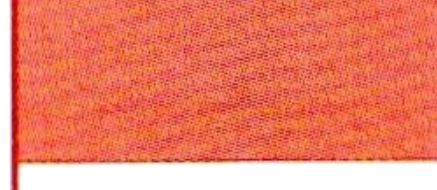
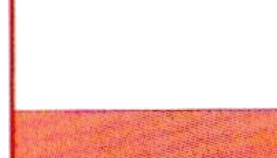
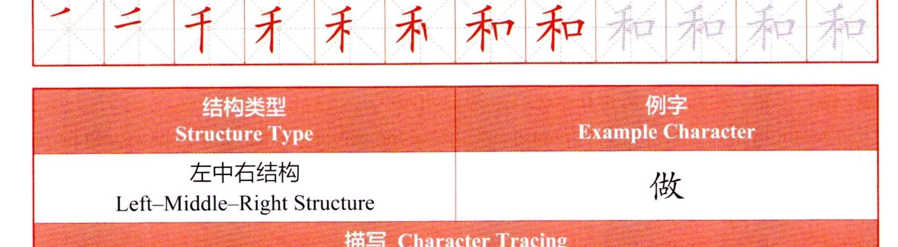
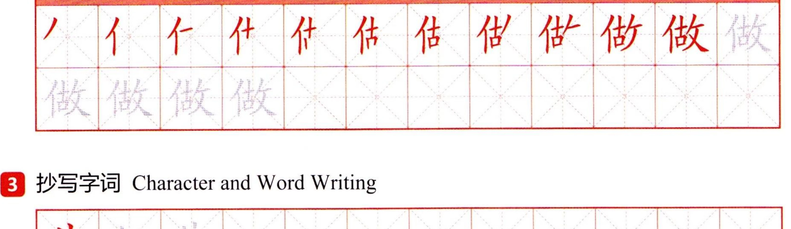
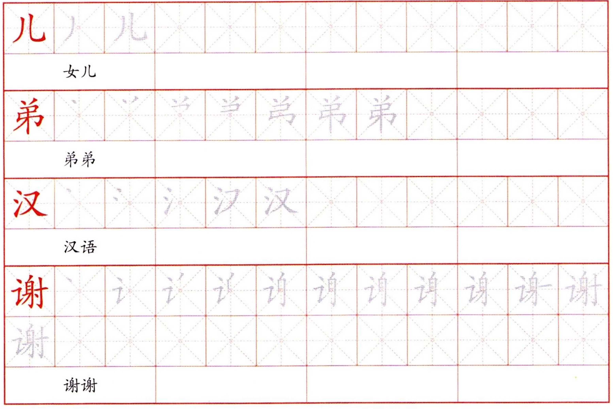

2学练合体字结构Compound Character Structure PracticeПрактика структуры составных иероглифов
结构类型 Structure TypeStructure TypeТип структуры
例字 Example CharacterExample CharacterПример иероглифа
左右结构 Left-Right StructureLeft-Right StructureСтруктура лево-право
和
描写 Character TracingCharacter TracingОбводка иероглифа

结构类型 Structure TypeStructure TypeТип структуры
例字 Example CharacterExample CharacterПример иероглифа
左中右结构 Left-Middle-Right StructureLeft-Middle-Right StructureСтруктура лево-центр-право
描写 Character TracingCharacter TracingОбводка иероглифа

3抄写字词Character and Word WritingНаписание иероглифов и слов
